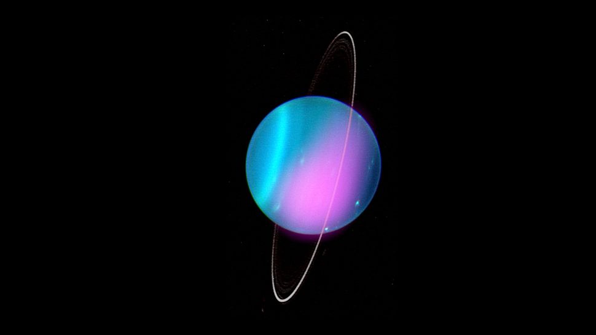

- MERCURY: THE CLOSEST PLANET TO THE SUN
Mercury is the closest planet to the sun. The planet is pictured here as seen by NASA's MESSENGER
spacecraft.
(Image credit: NASA/Johns Hopkins University Applied Physics Laboratory/Carnegie)
Mercury is the closest planet to the sun and the smallest planet in the solar system — it is only a
little larger than Earth's moon.
Mercury zips around the sun in only 88 days and because it is so close
to our star (about two-fifths the distance between Earth and the sun).
Mercury experiences dramatic changes in its day and night temperatures. Mercury temperatures can reach a
scorching 840 F (450 C) in the day, which is hot enough to melt lead.
Meanwhile, on the night side,
temperatures drop to minus 290 F (minus 180 C).
MERCURY FACTS
- VENUS: EARTH'S SOLAR SYSTEM TWIN
A newly processed (2020) image of Venus that was captured by NASA's Mariner 10 spacecraft.
(Image credit: NASA/JPL-Caltech)
Venus is the second planet from the sun and is the hottest planet in the solar system. Its thick atmosphere is extremely toxic and composed of sulfuric acid clouds, the planet is an extreme example of the greenhouse effect.
The average temperature on Venus' surface is 900 F (465 C). At 92 bar, the pressure at the surface would crush and kill you. And oddly, Venus spins slowly from east to west, the opposite direction of most of the other planets.
Venus is sometimes referred to as Earth's twin as they are similar in size and radar images beneath its atmosphere reveal numerous mountains and volcanoes. But beyond that, the planets could not be more different.
How Venus was formed?
VENUS FACTS
- EARTH: OUR HOME PLANET, FILLED WITH LIFE

One of the most detailed images of Earth. The montage was created from photographs taken by the Visible/Infrared Imager Radiometer Suite (VIIRS) instrument onboard the Suomi NPP satellite.
(Image credit: NASA)
Earth, our home planet, is the third planet from the sun. It is a water world with two-thirds of the planet covered by water. Earth's atmosphere is rich in nitrogen and oxygen and it is the only world known to harbor life.
Earth rotates on its axis at 1,532 feet per second (467 meters per second) — slightly more than 1,000 mph (1,600 kph) — at the equator. The planet zips around the sun at more than 18 miles per second (29 km per second).
Venus is sometimes referred to as Earth's twin as they are similar in size and radar images beneath its atmosphere reveal numerous mountains and volcanoes. But beyond that, the planets could not be more different.
10 Earth impact craters you must see.
EARTH FACTS
- MARS: THE SOLAR SYSTEM'S RED PLANET

A Mosaic of the Valles Marineris hemisphere of Mars. The image was created from 102 Viking Orbiter images of Mars.
(Image credit: NASA/JPL-Caltech)
Mars is the fourth planet from the sun.
It is a cold, desert-like planet covered in iron oxide dust that gives the planet its signature red hue.
Mars shares similarities with Earth: It is rocky, has mountains, valleys and canyons, and storm systems ranging from localized tornado-like dust devils to planet-engulfing dust storms. .
Substantial scientific evidence suggests that Mars at one point billions of years ago was a much warmer, wetter world, rivers and maybe even oceans existed.
Although Mars' atmosphere is too thin for liquid water to exist on the surface for any length of time, remnants of that wetter Mars still exist today.
Sheets of water ice the size of California lie beneath Mars' surface, and at both poles are ice caps made in part of frozen water.
Scientists also think ancient Mars would have had the conditions to support life like bacteria and other microbes. Hope that signs of this past life — and the possibility of even current lifeforms — may exist on the Red Planet has driven numerous Mars missions and the Red Planet is now one of the most explored planets in the solar system.
MARS FACTS
- JUPITER: THE LARGEST PLANET IN OUR SOLAR SYSTEM

This stunning image of Jupiter, taken by the Hubble Space Telescope, was captured on Aug. 25, 2020 and shows ripples in the planet's atmosphere, Jupiter's famous Great Red Spot and the planet's striking colors.
(Image credit: NASA, ESA, STScI, A. Simon (Goddard Space Flight Center), M.H. Wong (University of California, Berkeley), and the OPAL team).
Jupiter is the fifth planet from the sun and the largest planet in the solar system.
The gas giant is more than twice as massive as all the other planets combined, according to NASA.
Its swirling clouds are colorful due to different types of trace gases including ammonia ice, ammonium hydrosulfide crystals as well as water ice and vapor.
Jupiter has a strong magnetic field, and with 75 moons, including the largest moon in the solar system, Ganymede.
JUPITER FACTS
- SATURN: THE RINGED JEWEL OF THE SOLAR SYSTEM

The Hubble Space Telescope captured this image of Saturn during its northern hemisphere summer on July 4, 2020.
(Image credit: NASA, ESA, A. Simon (Goddard Space Flight Center), M.H. Wong (University of California, Berkeley), and the OPAL Team)
Saturn is the sixth planet from the sun and is famous for its large and distinct ring system. Though Saturn is not the only planet in the solar system with
rings.
Its swirling clouds are colorful due to different types of trace gases including ammonia ice, ammonium hydrosulfide crystals as well as water ice and vapor.
Jupiter has a strong magnetic field, and with 75 moons, including the largest moon in the solar system, Ganymede.
SATURN FACTS
- Uranus-The tilted,sideways planet in our solar system

X-rays from Uranus have been detected using NASA's Chandra X-ray Observatory.
(Image credit: X-ray: NASA/CXO/University College London/W. Dunn et al; Optical: W.M. Keck Observatory)
Uranus is the seventh planet from the sun and is a bit of an oddball.
It has clouds made of hydrogen sulfide, the same chemical that makes rotten eggs smell so foul. It rotates from east to west like Venus. But unlike Venus or any other planet, its equator is nearly at right angles to its orbit — it basically orbits on its side.
Astronomers believe an object twice the size of Earth collided with Uranus roughly 4 billion years ago, causing Uranus to tilt. That tilt causes extreme seasons that last 20-plus years, and the sun beats down on one pole or the other for 84 Earth-years at a time.
The collision is also thought to have knocked rock and ice into Uranus' orbit. These later became some of the planet's 27 moons. Methane in Uranus' atmosphere gives the planet its blue-green tint. It also has 13 sets of faint rings.
how was Uranus is formed ?
URANUS FACTS
- NEPTUNE: A GIANT, STORMY BLUE PLANET

Neptune's winds travel at more than 1,500 mph, and are the fastest planetary winds in the solar system.
(Image credit: NASA/JPL)
Neptune is the eighth planet from the sun and is on average the coldest planet in the solar system. The average temperature of Neptune at the top of the clouds is minus 346 degrees Fahrenheit (minus 210 degrees Celsius).
Neptune is approximately the same size as Uranus and is known for its supersonic strong winds. The planet is more than 30 times as far from the sun as Earth.
Neptune was the first planet predicted to exist by using math, rather than being visually detected. Irregularities in the orbit of Uranus led French astronomer Alexis Bouvard to suggest some other planet might be exerting a gravitational tug. German astronomer Johann Galle used calculations to help find Neptune in a telescope. Neptune is about 17 times as massive as Earth and has a rocky core.
NEPTUNE FACTS
- PLUTO: ONCE A PLANET, NOW A DWARF PLANET

An enhanced color global view of Pluto showing the heart-shaped area now named 'Tombaugh Regio'.
(Image credit: NASA/Johns Hopkins University Applied Physics Laboratory/Southwest Research Institute)
Pluto was once the ninth planet from the sun and is unlike any other planet in the solar system.
It is smaller than Earth's moon; its orbit is highly elliptical, falling inside Neptune's orbit at some points and far beyond it at others; and Pluto's orbit doesn't fall on the same plane as all the other planets — instead, it orbits 17.1 degrees above or below. .
t is smaller than Earth's moon; its orbit is highly elliptical, falling inside Neptune's orbit at some points and far beyond it at others; and Pluto's orbit doesn't fall on the same plane as all the other planets — instead, it orbits 17.1 degrees above or below, taking 288 years to complete a single orbit according to ESA.
Why Pluto is a dwarf planet ?
PLUTO FACTS
Addtional information
- NASA solar system exploration.
- Prialnik, Dina K., Antonella Barucci, and Leslie Young, eds. Trans-Neptunian Solar System. Elsevier, 2019.